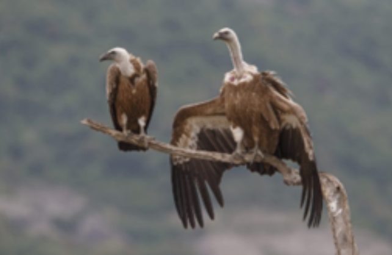

Sardinia is home to many different species of animals and plants. It is truly a birdwatcher’s paradise and nature enjoyer’s heaven. During your visit, make sure to meet some of the most wonderful animals on the island:
The beautiful colonies of Greater Flamingos (Phoenicopterus roseus) are a must-see while you are visiting Sardinia. They can be observed in the Molentargius-Saline Park and other wetland coastal areas around the island. Be sure you do not miss them!(Sardegna Turismo: The Park of Molentargius – Saline, 2015)
Image from: Sardinianbeaches, 2023
A species of lizards that inhabit only Corsica and Sardinia can also be seen during your visit! Fitzinger's Algyroides (Algyroides fitzingeri) are a small lizard species that can be found in Mediterranean shrubbery, temperate forests and shrubland. Not a whole lot of them are sighted and described so maybe you can help! (Fitzinger’s Algyroides (Algyroides Fitzingeri), 2018)
I(Image from: Algyroides Fitzingeri, 2015)
Griffon vultures (Gyps fulvus) can be a truly majestic sight while visiting Sardinia. They once could be found at places all over the island but were mostly wiped out after the Second World War. Since 2015, conservationists have been trying to make this population larger and have succeeded! In 2020, their population was larger by more than 100 individuals than in 2013. That means you have quite a chance to observe them during your visit so keep an eye out! (Griffon Vulture to Sardinia, n.d.)
Photo by Bogdan Boev
Giara horses ( Equus ferus caballus) are one of the few wild horse breeds left in Europe and can be found in Sardinia, specifically the Giara di Gesturi plateau, where a nature park is situated (you can find more information about the park on the interactive map). They are truly something you will need to see during your visit to Sardinia! (Sardinia Natour, 2024)
Image from: Il Parco - Parco Della Giara - Escursioni Sardegna, 2024
The Asinara albino donkey (Equus asinus var. albina) is a distinctive variant of the Sardinian donkey, notable for its white coat, pinkish skin, and light-colored eyes. It primarily inhabits the island of Asinara. This kind of natural wonder happens because of albinism that occurs in animals homozygous for a missense mutation in the tyrosinase gene. (Utzeri et al, 2016) Want to observe these beautiful animals on your own? The easiest way to see them is to take the White Donkey Trail in the Asinara National Park!
Image from: Cristina, 2021
Sardinia is also home to a few endemic species of plants. They can be found in Asinara park:
The spiny cornflower (Centaurea horrida) can be observed from the coast of Sardinia to the mountain peaks. It can live on various surfaces but has to have specific climatic conditions.
Terrestrial biodiversity. Asinara National Park, 2023
The beach bugloss (Anchusa crispa ssp. crispa) is found at Cala Spalmatore beach and is an exclusive endemism to Sardinia and Corsica.
Terrestrial biodiversity. Asinara National Park, 20233
MARINE LIFE
SEAME Sardinia
Address: Via delle Ginestre, 6, 07024 Villaggio Piras SS, Italy
SEAME is a non-profit organisation operating in Sardinia. Its made up of a group of researchers and promoters of sea life protection and conservation in the Mediterranean sea. Their objective is to spread awareness about conservation, educate and spread awareness to the public on why this is vital. They work in close companionship with the University of Sassari and participate with the research they carry out on crustaceans in the mediterranean sea. SEAME is open to the public and one can register to be a researcher with the group for a day, participate and witness the work that they do. The fee for the registration enables SEAME researchers to carry out this much needed research about marine life. They also collaborate with schools of various levels and aim to nourish the love of animals and nature in their students. For more details on the tours and research that SEAME do, check out their webpage and socials.
For more information: https://www.seame.it/en/ & https://www.facebook.com/seamesardinia/
Photo Links: Geomarine Ecology of La Maddalena Archipelago National Park ~ La Maddalena Archipelago Home - SEAME Sardinia
Progetto Natura
Address:Lungomare Barcellona, 07041 Alghero SS, Italy
Founded in 2012, it is constituted of scientific research professionals enthused in spreading information and awareness about sustainable tourism and nature conservation. They are the first sustainable and scientific dolphin watching company in Sardinia! Due to their extensive knowledge and background in marine science yoru chances of spotting a dolphin on thier trips is higher than 80%! Tours are offered in a plethora of languages and their diving is led by experienced and well seasoned guides, sailors and free-divers. They are also heavily involved with Alghero Ecotourism NEtwork which is responsible for promoting eco-friendly tourism reducing the negative impact it can have on nature of the island. Much of their efforts also go out to schools where they carry out educational sessions mentoring students and professionals on marine environment protection. Their excursions are as memorable as they are enriching. Check out their website for more details on their work and excursions.
For more information: Progetto Natura
IMC- INTERNATIONAL MARINE CENTRE
Address:IMC International Marine Centre, Loc. Sa Mardini Torregrande (OR) 09170
IMC is a foundation that is a major developer and participant in scientific research projects of marine biology including lagoon and coastal fields and the environment around it. They operate on both national and international levels, developing and executing various training sessions and projects. Their projects are aimed at seeking alternative solutions to problems facing marine life and coasts and how to regulate aquaculture contributing to policy making in this field. Although they are not a tourist attraction and are focused on scientific research, they present opportunities to aspiring or already professionals in the marine biology field. For more details ensure to check out their website (it is currently under construction momentarily).
For more information: Fondazione IMC Centro Marino Internazionale ONLUS
Photo links:InIMC International Marine Centre | LinkedIn
References
Dolphin watching & Snorkeling - Sardinia, Alghero | Progetto Natura. (2025). Progettonaturasardegna.com. https://www.progettonaturasardegna.com/en/
Fondazione IMC Centro Marino Internazionale ONLUS. (2015, October 5). IMC. https://www.fondazioneimc.it/en/
Geomarine Ecology of La Maddalena Archipelago National Park ~ La Maddalena Archipelago. (2024, February 26). La Maddalena Archipelago. https://www.montebello21.com/en/geomarine-ecology-of-la-maddalena-archipelago/
Progetto Natura. (2025). Dolphin Watching Eco Tours – Sardinia, Alghero | Progetto Natura. Progettonaturasardegna.com. https://www.progettonaturasardegna.com/en/excursions/spring-autumn-tour-dolphin-watching.html
Seame. (2015). Seame. https://www.seame.it/en/
Tripadvisor. (2025). Tripadvisor. https://www.tripadvisor.com/Attraction_Review-g187880-d5996884-Reviews-Progetto_Natura-Alghero_Province_of_Sassari_Sardinia.html
MEDSEA. (2021). Medseafoundation.org. https://www.medseafoundation.org/index.php/en/aboutussep/about-us